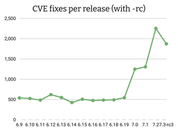

Coping with the onslaught of kernel security bugs
don't panic".
we're doing fine, and could go
faster
".
Nobody should panic, he emphasized, this flood is not a big problem. There
is a lot of coverage in the press, and a lot of "doom marketing
",
but we should just ignore it. As an example of how this marketing works,
he recounted an episode where he got a phone call informing him that the
Mythos LLM had found 79 Linux kernel vulnerabilities. After being
concerned initially, he obtained access to the raw data, which he is now
able to talk about. This set of alleged vulnerabilities was found by
looking at old bug fixes and finding other places with similar problems,
mirroring work by people like Julia Lawall and Sasha Levin in the past.
Of those 79 bugs, 24 had no detail beyond "something crashed
".
Another 14 were simply not bugs, and three were the result of made-up data
and were fake from the beginning. There were 15 that were real bugs — but
they had already been fixed in the current kernel release. That last set,
he said, is typical of these tools; they are sycophantic and will work hard
to find bugs if asked. They will even read the mailing lists to find and
report bugs that have been fixed by others. This pattern of "finding" bugs
that others have already reported is quite common.
That leaves 26 that were actual bugs needing attention — almost. Six of those were duplicates. And, he noted, the total doesn't add up to 79; LLMs are not always good at basic math. So 20 bugs needed fixes; of those, seven were only exploitable by way of a malicious filesystem image, something that the kernel community has long documented as not actually being a security issue. Two bugs required the ability to inject a malicious packet into the middle of the network stack, something that can only be done by root, so these were not real bugs. Two others only affected NOMMU systems (those without a memory-management unit); one of those was in io_uring. Nobody, he suspects, uses io_uring on NOMMU systems. He has fixed both bugs, but the fixes are not upstream yet, nobody really cares much about security on NOMMU systems. There were two minor IPv6 issues, and one that allowed a malicious local user to compromise the system via the GPU — but that user would already be capable of doing far worse.
The end result is that this exercise resulted in ten real bug fixes, in a project that is merging a little over ten patches every hour. So addressing it represented one hour of the kernel community's work.
The real problem
The problem that we should be worried about, he said, is the mean time to exploit — the time between the discovery of a bug and the appearance of exploits for it. In 2018, that time was 63 days; in 2026 it is 7 days. So this problem is real, but the biggest problem is that people are just not updating their systems. Running old software is a luxury many of us do not have anymore.
The bill is finally coming due for many years of underinvestment; our software simply was not designed for perfect security. Now we're going to have to grind through this phase of bug discovery. But this is something we have seen before; the advent of fuzzers years ago also resulted in a flood of bugs needing fixes. We did the work, dealt with those bugs, and the flow of fuzzer-discovered bugs eventually dropped considerably. When you fix all the bugs, he said, the reports stop.
As an example, consider rsync. Andrew Tridgell worked his way through all of the reported bugs (taking some grief along the way), and now all of the code scanners declare that rsync is clean.
He paused for a moment to reflect on the recent reports of communications within Microsoft suggesting that at least some executives there were concerned that their models were stealing much of the data they absorbed. A report from LG Research, he said, suggested that only 20% of the data used at LG for model training was legally obtained. We may not like how these tools were created, but we can make use of them to help make our software better.
That said, not everybody is working toward that goal. There are people flooding the kernel lists with patches, often hundreds per day; these patches are untested at best. We should just ignore them. The best models, he said, are still wrong 50% of the time, so we should just assume that 50% of LLM-generated patches are wrong. We do not have to just accept them. There are some patterns that can often be seen in LLM-generated code. For example, the models often want to replace, incorrectly, calls to mutex_unlock() with mutex_destroy(). They generate highly verbose and useless changelogs, and add far too many comments to the code.
When people have tried to create bots that are better at creating kernel
code, they have often started by training those bots on the kernel's
development history. But that history demonstrates a lot of patterns that
the community has long since left behind; it is full of bad examples. What
those bots produced, he said, was "bad code that cursed
".
Maintainers should not fear to push back when they see this kind of code.
Often the best question to ask is "how did you test it?". One should also
bear in mind that these systems leak; anything they tell you will be told
to others as well. Anything you upload into them will be handed out to
others. That is how researchers continually "discover" bugs that were
publicly reported a day earlier.
The future for these tools, he said, is not bright. For years, Coverity developed a code-scanning tool that produced many high-quality reports, and it was deterministic as well. But the company never managed to make money; people are not willing to pay for this kind of tool. The current tools, he predicted, will meet the same fate. Nobody wants to pay for code-quality tools when they work well, they certainly won't pay for tools with a 50% error rate.
Adaptation
So how is the kernel community adapting to this situation? One useful effort has been improving the documentation of the kernel's threat model; sometimes, the bots actually read that material, and patch submitters can be pointed to it in the remaining cases. The security-related documentation now requires that maintainers be copied on security reports; any sort of attempt to keep a lid on this information is doomed to fail. Reporters are also requested to submit an initial fix with their report; they can always ask their LLM to create that patch, and it helps kernel developers come up with a proper fix. He said that there is also now funding for a full-time developer to work on reports sent to security@kernel.org.
Developers and maintainers can push back on both bug reporters and patch
submitters; if they don't respond to questions, developers do not have to
respond to them. For their own testing, he said, developers should run local
models; they are good enough for the job, and non-public information should
never be uploaded to a non-local system. And, of course, "fix the
bugs
".
A useful tool for developers wanting to run models on their own code is
Chris Mason's kres; he
also suggested reading this
article by Willy Tarreau on how to use local models to find code bugs.
For managers, he said, the "Securing Open Source in the Age of AI" document from the OpenSSF should be required reading.
He concluded by saying that the flow of bug reports does not look like
it is slowing down in the near future; it is going to be "a rough
18 months
". But, when the dust settles, our code will be better than
it was before, and that is a good thing.
The video of this talk is available on YouTube.
[Thanks to the Linux Foundation, LWN's travel sponsor, for supporting my
travel to this event.]
| Index entries for this article | |
|---|---|
| Kernel | Security |
| Conference | Kernel Recipes/2026 |
Posted Oct 1, 2026 15:15 UTC (Thu)
by kkdwvd (subscriber, #179603)
[Link] (10 responses)
Posted Oct 1, 2026 16:50 UTC (Thu)
by rgmoore (✭ supporter ✭, #75)
[Link] (1 responses)
I think part of his message is that he doesn't expect another step function change, and he provides some reason to believe that. He draws a comparison to Coverity, which also created a big jump in the number of flagged bugs but which eventually tailed off when the bugs it could find were basically all found. If anything, the current situation is as likely to get better with improved LLMs as it is to get worse. Right now, the stream of bugs is polluted with a huge number of false positives and low quality patches, which makes dealing with the flow of bugs even harder. A better LLM might just as easily product fewer false positives and better written patches and find more bugs.
Posted Oct 1, 2026 17:38 UTC (Thu)
by raven667 (subscriber, #5198)
[Link]
I think if anything the mass CVE reporting is just showing under the hood what was always true about the number of potentially security-relevant bugs in the kernel and how many are fixed in any given release cycle, highlighting what GregKH has _always_ said, which is to always update to the latest release and track that as best as possible. Any security risk management process which is resourced on the assumption that bugs are rare is going to have a bad time when exposed to the reality that they are not.
Posted Oct 1, 2026 16:55 UTC (Thu)
by jgg (subscriber, #55211)
[Link] (4 responses)
On the other hand we are merging more patches than ever and everyone I talk to is frustrated how much more work there is and/or frustrated how slow things now are. Panic certainly seems appropriate..
Posted Oct 1, 2026 19:40 UTC (Thu)
by gmprice (subscriber, #167884)
[Link] (3 responses)
If nothing else, it is my option that LLMs exposed how poorly tested things actually are from a "proper engineering" perspective.
Something needs to change.
Posted Oct 1, 2026 19:51 UTC (Thu)
by mb (subscriber, #50428)
[Link]
Something needs to change This is the change.
Posted Oct 2, 2026 7:36 UTC (Fri)
by taladar (subscriber, #68407)
[Link] (1 responses)
Posted Oct 16, 2026 22:44 UTC (Fri)
by mrugiero (guest, #153040)
[Link]
Posted Oct 2, 2026 19:46 UTC (Fri)
by mcatanzaro (subscriber, #93033)
[Link] (1 responses)
For my part, I'm excited that we are finally able to find and fix our security flaws. Open source software is already way more secure than it was last year. And I think Greg is probably correct that it's only a matter of time until this rough period is behind us. I don't know whether it will be 18 months or 5 years, but I suspect that current AI models are good enough to find most security bugs, and future improvements will lead to diminishing returns.
I would say we are in a temporary bad state, but the future seems fine. There are better things to worry about.
Posted Oct 16, 2026 22:45 UTC (Fri)
by mrugiero (guest, #153040)
[Link]
Posted Oct 8, 2026 9:03 UTC (Thu)
by sam.thursfield (subscriber, #94496)
[Link]
> The bill is finally coming due for many years of underinvestment; our software simply was not designed for perfect security. Now we're going to have to grind through this phase of bug discovery.
If there was reason to panic it was 15 years ago already. Now at least we are accepting the reality of how critical open source infrastructure has been neglected.
Posted Oct 1, 2026 16:58 UTC (Thu)
by myUser (subscriber, #58242)
[Link] (2 responses)
Posted Oct 2, 2026 1:28 UTC (Fri)
by mikedebo (subscriber, #185991)
[Link]
Posted Oct 3, 2026 11:04 UTC (Sat)
by Karellen (subscriber, #67644)
[Link]
Posted Oct 1, 2026 16:59 UTC (Thu)
by NAR (subscriber, #1313)
[Link] (1 responses)
Posted Oct 1, 2026 19:43 UTC (Thu)
by rgmoore (✭ supporter ✭, #75)
[Link]
The remaining ones are genuine and serious. He isn't saying that LLMs are incapable of finding real problems, just that they turn up a lot of junk for every important bug they find.
Posted Oct 1, 2026 20:26 UTC (Thu)
by marcH (subscriber, #57642)
[Link] (18 responses)
Dave Chisnall wondered on Mastodon how many bugs would have been found if just 1% of the money, engineering time and GPU cycles thrown at^H invested in LLMs had been spent with static analyzers instead.
Posted Oct 1, 2026 21:14 UTC (Thu)
by Paf (subscriber, #91811)
[Link]
Posted Oct 2, 2026 8:05 UTC (Fri)
by mvollrath (subscriber, #183387)
[Link] (16 responses)
Similarly, instead of asking LLMs to find bugs, if we ask LLMs to write discrete tools to find bugs, maybe we decouple some of the sycophantic behavior Greg is talking about by moving the goal. When you ask the LLM to review the output of such a tool, now you're asking for accuracy, not "find me a bug". It's better at persistence and clearly bounded goals than unbounded cleverness.
Posted Oct 2, 2026 8:39 UTC (Fri)
by malmedal (subscriber, #56172)
[Link]
Or maybe have the LLMs write a harness to automatically verify that a bug is real. Perhaps a VM where the attempt can run and a verifier that checks the VM's memory to see if it managed to change anything it shouldn't.
Posted Oct 2, 2026 14:49 UTC (Fri)
by kleptog (subscriber, #1183)
[Link] (14 responses)
That only works if you can define a class of bugs that that has something you can test for: locking issues, data races, use-after-free, etc... It doesn't work for the one-off kind of bugs where the code is doing something different to what the specification says. The code is not buggy in an objective sense, only in the sense that it's violating the (often not clearly specified) specification.
New languages can eliminate classes of bugs but the one-offs are much harder. What makes LLMs interesting is that they have learned patterns about what correct code looks like and can recognise when a piece of code almost fits a pattern. And have an idea what kind of pattern violations are likely bugs. One could probably make a specific tool for that kind of thing, I just wonder if it would be any easier to make than training an LLM.
Posted Oct 9, 2026 17:49 UTC (Fri)
by raven667 (subscriber, #5198)
[Link] (12 responses)
What I'd be interested in is documenting the techniques and dataset curation needed to train a model just for bug discovery and not code generation, like a fancy grammar checker. That sounds like something which could be created in an ethical way at a fraction of the resource usage such that the cost/benefit ratio is positive. Right now if you weigh the resource cost of model training, the ethical cost of obtaining training datasets, the operational cost, and the cost of bending the entire global economy / supply chain to only making datacenter components, vs the benefits of sloppy code completion, even if the generated code was perfect in very way (its very much not) to me that still wouldn't be worth the cost as we just don't need that much software that quickly, we desperately need to maintain, simplify and cut the software we already have to a sustainable level.
Posted Oct 9, 2026 19:32 UTC (Fri)
by marcH (subscriber, #57642)
[Link] (3 responses)
One of the most surprising things for me in this current LLM "revolution" is how much new code people (think they) need. For decades, software engineering was: "code and debugging is expensive, so maximize code re-use" with many different approaches.
But now LLMs seem to be maximizing duplication: copy/paste/diverge on steroids.
Maybe this is fine. Maybe one size does not fit all and maybe we need different "classes" of code for different use cases, including code that no human understands and that is purely maintained by machines. And entirely discarded and replaced once it's grown too complex - just like before LLMs but for a smaller write-off cost.
Maybe the famous "Law of Software Envelopment" just got a new corollary.
Strange times anyway.
Posted Oct 9, 2026 20:30 UTC (Fri)
by mvollrath (subscriber, #183387)
[Link] (2 responses)
> Maybe this is fine. Maybe one size does not fit all and maybe we need different "classes" of code for different use cases, including code that no human understands and that is purely maintained by machines. And entirely discarded and replaced once it's grown too complex - just like before LLMs but for a smaller write-off cost.
My experience has been that SotA LLMs are now very good at making bespoke tools and applications, especially when they're solving a well-understood and well-specified problem.
Why use any existing MQTT broker software when you can have it make, in a weekend or two, a feature complete broker in Rust with complete test coverage, mutations, fuzzing, seccomp, landlock, apparmor, io_uring with op restrictions, the works? And optimized for your use case down to the data structures? And it has 4x the throughput of any other broker? It's an implementation of an open spec, there's nothing particularly interesting to copy from existing implementations. You'd be copying their bugs and "good enough" implementation choices. I've yet to find a free one that doesn't have holes in its spec compliance.
It seems to me like humans are pretty good at deciding what software needs to do, but not great at the making of the software. We fix the bugs that bother us the most and don't bother fixing the rest. We write tests to catch regressions and automate checking the happy path, not to make more work for ourselves, or we don't write tests at all. We only optimize away the biggest hangups and leave so much performance on the table. Writing and analyzing machine code is the realm of experts, and only applied in times of need. We don't gather encyclopedic knowledge of every algorithm and data structure ever invented. Everything hinges on our time being valuable.
Now we have tools that multiply our time, and in my experience, also multiply learning rate. As of September, it's gotten to the point where I'd be kind of pissed if it went away. I'm still banking on human knowledge being valuable, but the act of typing code into an editor has never been the interesting part of the craft. The best programming language is one you read and write natively.
Posted Oct 10, 2026 2:42 UTC (Sat)
by mathstuf (subscriber, #69389)
[Link] (1 responses)
Now we have tools that multiply our time, and in my experience, also multiply learning rate. As of September, it's gotten to the point where I'd be kind of pissed if it went away. I'm still banking on human knowledge being valuable, but the act of typing code into an editor has never been the interesting part of the craft. The best programming language is one you read and write natively. I've found a few things:
Posted Oct 11, 2026 20:32 UTC (Sun)
by mvollrath (subscriber, #183387)
[Link]
For "active development" where design is being done on-the-fly, the typing of the code gives me space to think about the design and seeing it unfold helps to clarify things. For example, after refactoring some LLM-assisted code recently, I found even more improvements and use cases that I wouldn't have without adding another feature utilizing many of the same codepaths. I can relate. I write all of the commit messages myself in detail, to prove to myself that I understand what's going on, and in that process I'll often ask the LLM questions and this leads to asking it for revisions. Rewriting (or removing) all generated comment blocks manually has a similar effect, and keeps the typical LLM over-commenting in check. The sweet spot seems to be, for me, a "motivation bridge" where I know how something should be done in my head, but the activation energy is just too high. This seems to be the land of "good third to fifth issue" bugs and features (I definitely don't think LLMs belong in the "good first issue" field for long-lived projects because their value lies in being an onramp for humans). For me, it was a motivation bridge to learning about the kernel and how to work on it. If you use it "the way I think you oughtta", spending most of your time asking questions and reading the code it is citing to explain things, you can produce a better first patch even if you never press Send on the generated output. Doing good work still requires time and attention and now the discipline to not just vibe slop it. Now that I've been working on kernel for about 8 months, and mostly drivers, it's maddening. There are so many bugs and optimizations left on the table. Drivers controlling chips produced in the hundreds of millions lacking attention and modernizations from the past 20 years of kernel development. I have 4 e1000e chips in my house and they're still mapping and unmapping DMA for every frame that comes and goes. Almost every DMA map error path was badly broken at the beginning of this year. Now I'm picking through the bugs so that I can drip feed patches to unify the 3 Rx paths and get it on a page pool without papering over too many issues. I have a fifth bullet point to add to yours: When any software I use doesn't do what I want it to, it takes very little effort to patch it or even replace it and make the problems go away. An LLM digs up crash dumps, runs debugger against hung processes, isolates where the problem is, and produces a patch or solution in minutes. I could have done that manually, but I would have tried really hard to find another way around or just accepted the jank. A friend vibed out his own Xorg server implemented in Odin and is very happy with it. And why not? This effect is coming for the kernel and open source. I've been running my own kernel fork for most of this year, and at the current rate it will be late next year before all of the changes are even submitted to mainline. There will be forks. For some, -7 days median time to exploit isn't good enough.
Posted Oct 10, 2026 1:40 UTC (Sat)
by mathstuf (subscriber, #69389)
[Link] (7 responses)
What I'd be interested in is documenting the techniques and dataset curation needed to train a model just for bug discovery and not code generation, like a fancy grammar checker. I don't know. There was a QotW not too long ago pointing out that the labs were always reporting the numbers of bugs found rather than patches accepted. Of course, when your marketing department has to deal with the difference between "79 bugs found" and "6 patches applied (but not written by our models)", I imagine they're going to prefer to talk about the first number. I'd certainly prefer that patches come along with such reports, but I've not had the bug firehose pointed in my direction yet either, so perhaps my opinion would change given such a trial.
Posted Oct 12, 2026 15:57 UTC (Mon)
by raven667 (subscriber, #5198)
[Link] (6 responses)
Posted Oct 13, 2026 0:49 UTC (Tue)
by marcH (subscriber, #57642)
[Link] (4 responses)
Are there numbers to demonstrate that? It sounds intuitive but you can also imagine that a larger model is a superset of multiple, more specialized ones - hence performing just as well.
The only advantage of more specialized models (assuming they survive...) that seems certain is: RAM size needed for inference. Even more so considering the shortage and crazy prices.
I think I've seen (but not read, sorry) papers on this topic.
Posted Oct 13, 2026 11:53 UTC (Tue)
by Wol (subscriber, #4433)
[Link] (2 responses)
The problem is a larger generalist model is less able to understand the problem. As a simple example, let's pick two languages, BASIC and SQL. Given the huge variety of dialects, a small specialist model will give a much better result. Certainly from what I've heard, people who can train up their models further get excellent results with DataBASIC, while the general models are useless.
(Moi, cynical? But don't forget I don't have any experience of top-end models.)
Cheers,
Posted Oct 13, 2026 15:52 UTC (Tue)
by kleptog (subscriber, #1183)
[Link]
Isn't that a different issue though? The generalist model training has lots of programming stuff, but not a lot of DataBASIC specifically. So if you take a generalist model and tune it for coding some obscure language it's probable you're going to get better results than from a generalist model alone.
So the model understands your problem just fine, just not the language used to write the result. It's the same as an experienced programmer who has never seen Python before, they can program just fine, they just need specific information about how Python expresses various concepts.
AIUI the trend is to train large general models and then use those to create specialised ones (distilling). The bulk of the models are unchanged, just tweaking the outputs a bit.
Posted Oct 13, 2026 15:55 UTC (Tue)
by mvollrath (subscriber, #183387)
[Link]
For those running local models, MoE is practical because it keeps most of the model in system RAM rather than VRAM, which is usually the constraint when working with found hardware.
Posted Oct 16, 2026 23:01 UTC (Fri)
by mrugiero (guest, #153040)
[Link]
Are there numbers to demonstrate that? It sounds intuitive but you can also imagine that a larger model is a superset of multiple, more specialized ones - hence performing just as well.
Either way, a massive, "one size fits all" model is apparently more "economical" to train (and as you wrote: to make money from) than many more specialized ones. Even if the quality goes down. Not numbers, but my way of thinking about it is: See, overfitting is just fitting when you really really want a hammer.
That said, I believe it is typically cheaper to do that biasing pass after a pre-training on pretty much everything. If you also need to lower resource usage, you can remove layers afterwards, etc. But doing 100 different pre-trainings sounds like much more waste than a single bigger one. In any case that's an implementation detail.
Posted Oct 13, 2026 8:17 UTC (Tue)
by taladar (subscriber, #68407)
[Link]
Posted Oct 16, 2026 23:05 UTC (Fri)
by mrugiero (guest, #153040)
[Link]
Posted Oct 1, 2026 20:37 UTC (Thu)
by marcH (subscriber, #57642)
[Link]
Submitters should absolutely test locally and LLM reviews are increasingly part of testing standards.
But each kernel subsystem should _also_ have some sort of CI that does that automatically. For 1) catching submitters who haven't done it 2) demonstrating how it's done. This is 2026, Continuous Integration is 20 years old now.
Could a fraction of the massive AI resources currently "attacking" merged code be redirected to code not merged yet? Or are the incentives missing for that? No CVE and no publicity for instance :-(
Posted Oct 1, 2026 20:50 UTC (Thu)
by fenncruz (subscriber, #81417)
[Link] (4 responses)
They may have just been about abit early. I work at a large company that does pay for Coverity. But we only do that because of the EU's coming CRA is forcing us to take security more seriously. I expect as we get closer to the time when the CRA comes into force, there will be a big pick up in these tools as companies scramble to get into compliance.
Posted Oct 2, 2026 14:31 UTC (Fri)
by jgg (subscriber, #55211)
[Link] (3 responses)
"We only do that because of EU rules" is exactly the market they serve. It has nothing to do with improving the product or finding bugs. It is entirely "someone told me I have to run it so I will pay for it". I'm not sure it is meaningfully better now than when I first saw them as a startup 25 years ago... Sashiko and other other AI review tools are ridiculously better.
Posted Oct 8, 2026 2:15 UTC (Thu)
by JoeBuck (subscriber, #2330)
[Link]
Posted Oct 9, 2026 21:44 UTC (Fri)
by prati0100 (subscriber, #160597)
[Link] (1 responses)
I used Coverity a couple years ago and I too fouind it pretty much useless. The false positive rate was way too high and it just wasn't worth the effort in trying to analyze the findings. We got a report for every change submitted to the (downstream) kernel, and everyone pretty much just ignored it.
Posted Oct 10, 2026 14:22 UTC (Sat)
by dskoll (subscriber, #1630)
[Link]
I used Coverity recently on a smallish (50K lines) C project. I found it quite useful; it found about 13 real bugs and about 21 FPs. The FP rate was high, but the total number of defects it claimed was low enough that I could go through them all and check.
I would imagine on a much larger project, the FP rate would create too much work to sift through.
Posted Oct 2, 2026 8:30 UTC (Fri)
by rbranco (subscriber, #129813)
[Link] (2 responses)
As a consequence, security teams have to:
But sure, we're doing a great job here. Sigh.
The Linux Foundation has plenty of resources. It shouldn't be a one-man job.
Posted Oct 2, 2026 11:07 UTC (Fri)
by koverstreet (subscriber, #4296)
[Link]
Posted Oct 3, 2026 14:42 UTC (Sat)
by csamuel (✭ supporter ✭, #2624)
[Link]
> - CVE inflation from assigning CVEs to trivial issues with no real impact.
To a degree their hands are tied by the rules of being a CNA and current cve.org policies, Greg covers that here: http://www.kroah.com/log/blog/2026/02/16/linux-cve-assign... (including why anything that can trigger a `WARN()` or `WARN_ON()` has to be a CVE).
But yes, for those of us for whom a mainline kernel is not an option, these are painful and trying times.
Posted Oct 2, 2026 14:07 UTC (Fri)
by miggaz (subscriber, #175361)
[Link] (2 responses)
Do LLMs really do this ? I understand they can leak if a version was trained on output from a previous version, but how can they leak the information so fast ?
Posted Oct 2, 2026 15:24 UTC (Fri)
by nim-nim (subscriber, #34454)
[Link]
The obvious next-step is to cache the private knowledge fed them by their customers. That gives a competitive advantage over peers, that also hammer public information.
Of course nobody ethical would ever do that. Well they were not ethically challenged when they built their initial trianing corpus, so believe what you want to.
Posted Oct 3, 2026 15:39 UTC (Sat)
by Wol (subscriber, #4433)
[Link]
They don't. If the bug was announced yesterday, they know where bugs are announced so every time they are asked, they know where to look.
Okay, I'm being a bit anthropomorphic, but you only have to read about the recent stuff where OpenAI hacked Huginface, to realise that AI is doing all sorts of stuff that we didn't intend it to; and it's hardly a stretch to assume that if you ask it to find bugs, the first place it will go to is the place where bugs are announced ...
Cheers,
Posted Oct 2, 2026 15:38 UTC (Fri)
by kolAflash (subscriber, #168136)
[Link] (8 responses)
> seven were only exploitable by way of a malicious filesystem image,
Maybe I don't get the attack scenario right. But I'd say:
So the Linux kernel says it's the users or the integration vendors responsibility. But I'm pretty sure most users never heard of this and most integration vendors (car manufacturers, Linux distributions) don't care and even enable auto-mount for USB disks.
There seem to be some FUSE based drivers which can be used instead of in-kernel drivers. Like fuse2fs, fusefat, exfat-fuse and lklfuse (you should probably run it in a container if you fear a malicious file system). But I've never heard that at least udisks make use of them for removable media.
Posted Oct 2, 2026 15:48 UTC (Fri)
by kolAflash (subscriber, #168136)
[Link]
But even if udisks would do that, there would be a TOCTOU attack vector.
Posted Oct 2, 2026 15:57 UTC (Fri)
by kolAflash (subscriber, #168136)
[Link]
Posted Oct 2, 2026 16:50 UTC (Fri)
by david.a.wheeler (subscriber, #72896)
[Link] (5 responses)
ChromeOS, for example, *DOES* care about this, so they use the Linux kernel and they ALSO use a FUSE-based system when mounting external untrusted drives. That system adds such protections, with an extra cost. However, ChromeOS *only* counters "passive" USB drives; an active drive that changed its contents after mounting (which is absolutely possible for an external device) isn't countered this way. They do prevent mounting a new USB drive while locked.
No one system does *everything*.
Posted Oct 5, 2026 10:14 UTC (Mon)
by taladar (subscriber, #68407)
[Link] (3 responses)
Posted Oct 5, 2026 11:19 UTC (Mon)
by mathstuf (subscriber, #69389)
[Link] (2 responses)
I believe it is also something along the lines of "patches purely to deal with malicious filesystem images go to the bottom of the patch pile".
Posted Oct 5, 2026 13:55 UTC (Mon)
by csamuel (✭ supporter ✭, #2624)
[Link] (1 responses)
> For some filesystem bugs a CVE will not be assigned when a maliciously crafted or accidentally corrupted filesystem image is mounted by the kernel, and the kernel crashes or has other problems with it, unless the filesytem-specific userspace fsck program previously ran on the image before mounting, and it did not find any problems with it. In simpler terms, always run fsck on any untrusted filesystem image before mounting it.
So they will (or should) happily make CVEs for these crashes if the filesystem checker didn't spot the issue.
Personally I think even if it does it should be a CVE, but it's certainly not as clear cut as "we don't care about corrupt filesystems".
Posted Oct 5, 2026 14:33 UTC (Mon)
by mathstuf (subscriber, #69389)
[Link]
Ah, that makes much more sense. Perhaps I am thinking of the actively malicious case (where the device is actively involved in giving bad answers to the kernel after mounting).
Posted Oct 5, 2026 13:18 UTC (Mon)
by kolAflash (subscriber, #168136)
[Link]
I don't disagree with the Linux kernel threat model. But I'm having the impression a lot of the ecosystem around the kernel doesn't know or doesn't care. And I think maybe the kernel has some low-effort possibilities to make at least the people who don't know more aware of it - like adding an required "accept-insecure" mount flag filesystems on removable drives.
Posted Oct 2, 2026 16:13 UTC (Fri)
by csamuel (✭ supporter ✭, #2624)
[Link] (2 responses)
> He said that there is also now funding for a full-time developer to work on reports sent to security@kernel.org.
That's a reflection on how much the commercial world really cares about this. Enough to (finally) fund one person for this work (presumably alongside all the current volunteers).
Posted Oct 2, 2026 16:38 UTC (Fri)
by rgmoore (✭ supporter ✭, #75)
[Link] (1 responses)
They're now funding one person at the Linux Foundation. Many of those "current volunteers" are professional kernel hackers paid by the big Linux companies. The distinction is that they're paid to work on a particular part of the kernel and only touch security as it affects their part of the kernel, rather than being security focused and dealing with various parts of the kernel as security issues are found there. There is definitely a benefit to having at least one person who focuses exclusively on security issues, but it's misleading to suggest that nobody has been paid to work on security issue up to this point.
Posted Oct 3, 2026 14:29 UTC (Sat)
by csamuel (✭ supporter ✭, #2624)
[Link]
Posted Oct 3, 2026 14:12 UTC (Sat)
by 0hax (subscriber, #113801)
[Link]
Posted Oct 4, 2026 16:45 UTC (Sun)
by wtarreau (subscriber, #51152)
[Link] (4 responses)
Posted Oct 9, 2026 0:34 UTC (Fri)
by gioele (subscriber, #61675)
[Link] (3 responses)
What is the source for the "minus 7 days" figure?
Posted Oct 9, 2026 10:16 UTC (Fri)
by abonnet (subscriber, #164973)
[Link] (2 responses)
Posted Oct 9, 2026 10:39 UTC (Fri)
by gioele (subscriber, #61675)
[Link] (1 responses)
Sorry, I meant: what is Greg's source for the "minus 7 days" figure?
That slide (at 11:08 in the video) does not reference any other document and Greg does not mention anything during the talk.
Posted Oct 9, 2026 19:56 UTC (Fri)
by abonnet (subscriber, #164973)
[Link]
Posted Oct 5, 2026 19:49 UTC (Mon)
by hsivonen (subscriber, #91034)
[Link] (2 responses)
It looks like reports from reporters who are aiming for “I found a security bug in the kernel!” are to a large extent bad reports.
When the security team of a project runs the scan themselves and the bots are required to find a reproducer that triggers a non-LLM oracle like ASAN, the report quality is much better.
Posted Oct 5, 2026 21:15 UTC (Mon)
by rgmoore (✭ supporter ✭, #75)
[Link] (1 responses)
This sounds like the classic sensitivity vs error tradeoff. You can drastically reduce the error rate if you increase the stringency of your filtering, but that can come at the cost of tossing some real bugs. Where you set your threshold depends at least in part on how much time you're willing to devote to manually filtering the bug reports. If you have limited resources, you want to crank up the stringency so you they're all going into fixing real bugs. If you have more resources, you can afford to spend some of them triaging bug reports so you don't miss an important bug that was reported poorly.
Posted Oct 31, 2026 11:47 UTC (Sat)
by sammythesnake (guest, #17693)
[Link]
Obviously, there are some assumptions* baked into that simplified description, but you get my point, I hope.
I think having an LLM adversarially challenge the reports generated seems like a sensible stage to include. It could probably to spot duplicates of recent reports, disprove trivial fabrications, and otherwise winnow out some of the chaff...
If the volume of bug reports is high enough, then it doesn't matter all that much how many real reports are inadvertently discarded, providing there are enough important bugs to work on...
* E.g. If everyone did the same thing, they'd probably waste a lot of time duplicating work on the same bugs. The selectivity probably isn't quite what we'd ideally like. Probably better to aim for a handful of bugs and picking one that looks particularly promising in terms of likelihood of being real / impact / easy to fix / on topic for whoever is involved in fixing / whatever.
Posted Oct 13, 2026 14:16 UTC (Tue)
by riel (subscriber, #3142)
[Link]
I've been working on a Linux kernel coding style for LLMs. It helps create shorter, more readable functions, splits up large patches into a series of smaller patches, ensures changelogs and comments are focused on WHY rather than re-stating what the code does, etc...
It is not perfect, but it has reduced the amount of editing I need to in order to get the code into a decent shape.
Do panic
Do panic
Something has to give, and the process in place right now is not equipped to handle where we are headed (where the rate of bug finding will probably under go another step function change).
Do panic
Do panic
Do panic
Do panic
Do panic
Do panic
Do panic
Do panic
Do panic
About panicking
About panicking
About panicking
I might be wrong at math too, but something seems missing.
According to Greg, 20 bugs needed fixes. If I understood correctly, there were
Math?
That's 14 out of 20 - what were the other 6?
Math?
That's 14 out of 20 - what were the other 6?
Static analyzers
Static analyzers
Not very many of them. They find many logic bugs which static analyzers are fundamentally incapable of discovering, since they relate to intent.
Static analyzers
Static analyzers
Static analyzers
Static analyzers
Static analyzers
Static analyzers
Static analyzers
sed-able: just do it; explaining it is probably not worth it (though one's editor proficiency may move this line around wildly). ast-grep can raise the bar significantly (though LLM assistance to write the ast-grep rules may be useful). Many times, tools can do these things (e.g., cargo update --breaking can update Cargo.toml for you)<details> migration here as well that really should be a separate MR that I've not separated out yet. I'm not good enough at prompting to get this kind of leverage out of LLMs quicker than I can discover it while typing.Static analyzers
Static analyzers
Static analyzers
Smaller, more specialized models
Either way, a massive, "one size fits all" model is apparently more "economical" to train (and as you wrote: to make money from) than many more specialized ones. Even if the quality goes down.
Smaller, more specialized models
Wol
Smaller, more specialized models
Smaller, more specialized models
Smaller, more specialized models
Static analyzers
Static analyzers
CI on code not merged yet
coverity
coverity
coverity
coverity
coverity
We can do better than this
- CVE inflation from assigning CVEs to trivial issues with no real impact.
- Actual vulnerabilities not getting CVEs at all, or getting them late.
- Commit messages that hide or obfuscate the security issues they're trying to fix.
- Commits being sloppily backported.
- Bogus CVSS scores.
- Guess which CVEs to prioritize.
- Do the work of the Linux CNA.
We can do better than this
We can do better than this
LLM leak
LLM leak
LLM leak
Wol
malicious filesystem not being a security issue!?
> something that the kernel community has long documented as not
> actually being a security issue
There are a lot of Linux based devices where it's expected that people plug in USB drives or maybe CDs/DVDs - the kind of hardware containing file systems. (rental) cars (USB MP3 playback), photo printer stations in copy shops, hotel room TVs, ...
And surely a lot of applications at home like a notebook, a phone (USB on-the-go) or a SOHO router with an USB port to connect a USB disk as network drive. And do GNOME and Android maybe even automount USB storage (even with the screen locked)?
Surely, for servers it's mostly irrelevant. Except when a sysadmin mounts the disk image of a customer VM on the host...
I understand that the kernel devs can't just take responsibility for everything. But maybe the kernel could at least have a mechanisms which requires an "accept-insecure" mount flag for file systems on a removable drive. So downstream projects like udisks become more aware of the problem.
malicious filesystem not being a security issue!?
I've also never seen udisks running fsck on a removable disk before mounting it.
https://docs.kernel.org/process/threat-model.html#:~:text...(fsck)%20on%20the%20image%20prior%20to%20mounting
> running a filesystem consistency check (fsck) on the image prior
> to mounting
https://en.wikipedia.org/wiki/Time-of-check_to_time-of-use
A required accept-insecure mountflag for removable media feels more and more like a good idea for the kernel.
malicious filesystem not being a security issue!?
https://www.libguestfs.org/guestmount.1.html
This runs a tiny Linux VM, mean to mount VM disks without root permissions. I'm not sure how thoroughly they check their guest-host communication and filesystem share for vulnerabilities. But it feels like a possible step forward. Maybe udisks should use it for physical media.
malicious filesystem not being a security issue!?
malicious filesystem not being a security issue!?
malicious filesystem not being a security issue!?
malicious filesystem not being a security issue!?
malicious filesystem not being a security issue!?
malicious filesystem not being a security issue!?
Can you tell which FUSE driver ChromeOS uses to mount external untrusted drives?
Maybe one of the FUSE drivers fusefat, exfat-fuse, lklfuse or guestmount?
I'd be curious if the udisks developers could also use what ChromeOS uses.
One paid position for dealing with security reports
One paid position for dealing with security reports
Enough to (finally) fund one person for this work (presumably alongside all the current volunteers).
One paid position for dealing with security reports
Spam is from people rather than LLM
Not 7 days, minus 7 days
Not 7 days, minus 7 days
Not 7 days, minus 7 days
Not 7 days, minus 7 days
Not 7 days, minus 7 days
External vs. internal LLM bug finding
External vs. internal LLM bug finding
External vs. internal LLM bug finding
LLM coding style